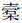

北风吹着阵阵的寒云，把晴明的天日都遮住。这洁净的小屋中，才四点多钟，已觉得有些黑暗。
她坐在椅子上，拿着解放杂志翻来覆去的看，但是始终没有看清那一段是什么话，时时掩了书，对着镜子，呆呆的站着。
她一举一动，都像受了“无聊”的支配，时时仿佛听见皮鞋

的声音，她却懒着向院中去看，以为这个声音，决不是假的，也决不是旁人。拍拍的打门，小狗儿汪汪的乱叫，这冷淡的院宇，才稍微有些活气。
“兰香！看看谁打门呢！”
“或者是送信的吧！”兰香答应这句话狠诚恳。
兰香进来，一边走，一边念：“普安寺十五号，秦心鸢女士，秋缄”
她赶紧站起来，接过信，不知怎样就拆开了，这是兰香看惯的，但是极注意她脸上的颜色。
她脸上忽然红了，又渐渐的灰白，狠不愿意拿自己的感情，去激动别人，就面向着里说：“兰香你快泡茶去吧！”
她扶着椅子，不知想些什么，只看见镜里的灰白面孔，一阵阵的冷笑，她忽然像发狂的样子说：“我为什么要受他的驱使？我为什么热心协助他，甚且要嫁他？”她软软的坐下。
好大半天，院中家雀，正在啁啁啾啾叫的高兴，忽然全飞了。兰香拿着茶碗进来。
“兰香！你知道宇宙间，也有热心作事的过错吗？这良心，是要寄在条规上吗？”这时候，兰香仿佛是天上降下来的神女。
“姑娘！那天我上街，见着了他，他说：‘你们姑娘，实在诚实，只是少了些修饰，而且有点粗心，’姑娘！你的信，许我看看吗？”
“兰香！你替我看完了吧！”
“啊哟！姑娘！不但少些修饰，这天真烂缦，也是败事的根呢！”
原载1921年5月《海外新声》第一卷第三号